I've been thinking about one of our lesson's discussion questions for a few days — for whom or what should you passionately take a stand like Esther? I'll be honest that I didn't spend much time on it at first. For most of my life I was consumed with bringing Christ to teenagers, especially those at risk. Nearly every available dollar, hour, and ounce of energy went toward that one passion, and I suffered a great deal for it. For ten or twenty years I couldn't read Ezekiel 34 without crying, almost hysterically. There's a song, I Wish You Jesus by Scott Wesley Brown, that captures exactly why I carried that passion — the lyrics are worth reading on their own, and the recording even more so.
But I know myself now. I can't do what I used to do — nothing close to it — so my first instinct was to leave the question blank. My days of that kind of sacrifice feel over. Still, I used to give regularly through my Intel paycheck to fight human trafficking, and I haven't in a long while. Esther's example nudged me to get involved again, even in a limited way. The cause is every bit as worthy as hers was. Every bit as dire.
So I went looking, to get back up to speed on where things actually stand. It was brutal — I had to read in small pieces, take breaks, screenshot what I could stand to come back to later. Too emotional to take in all at once. What follows is what I found.
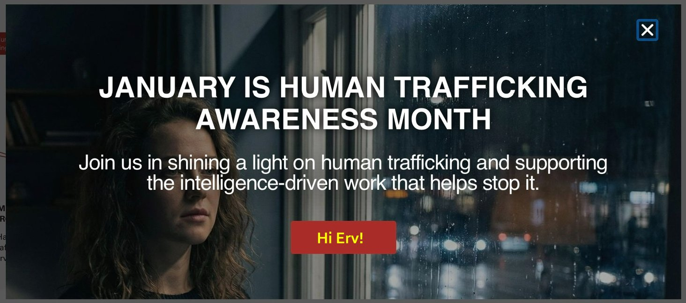
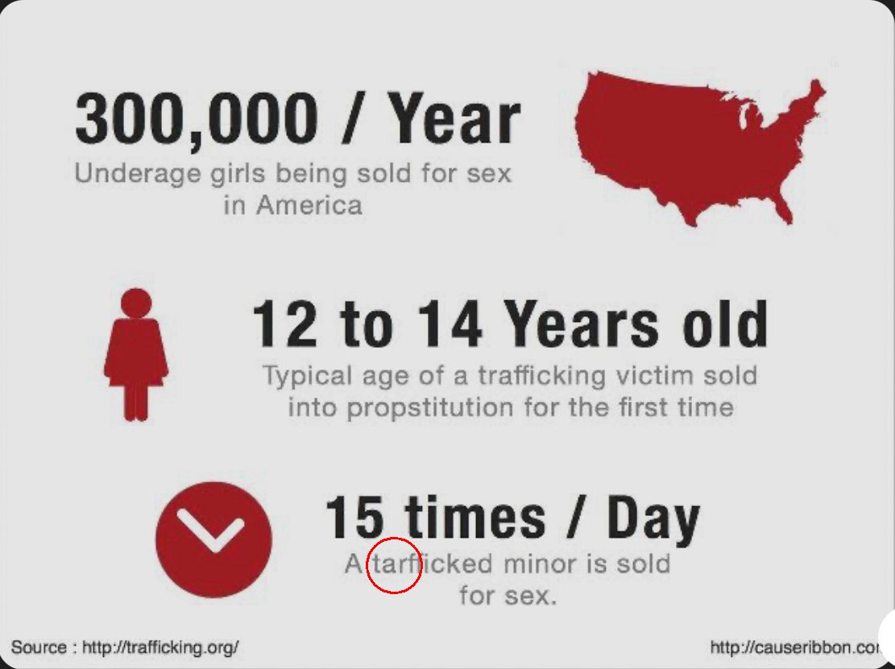
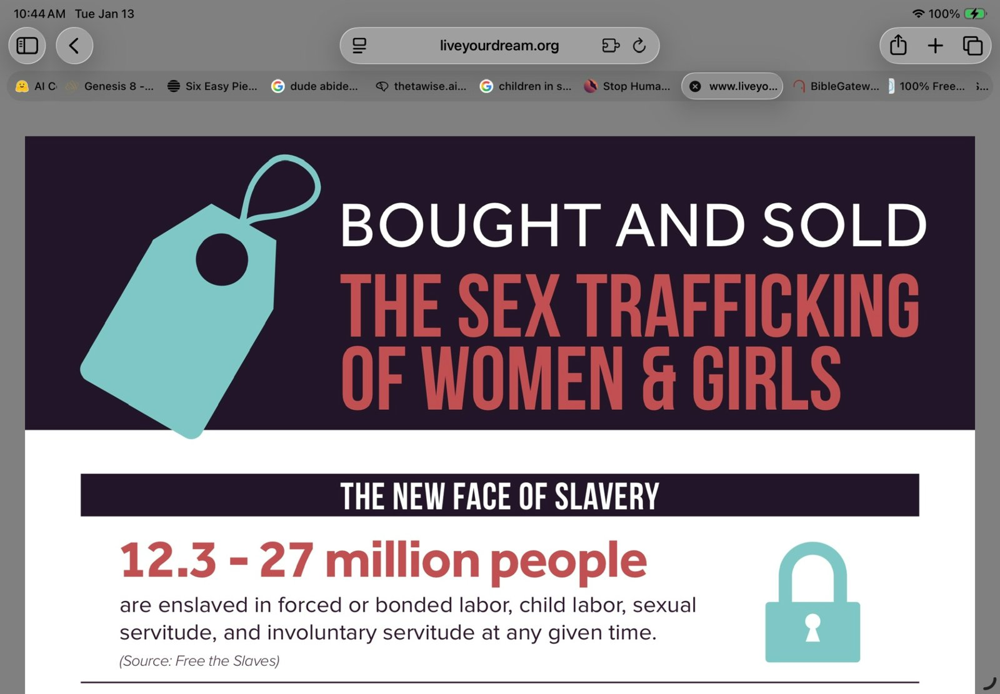
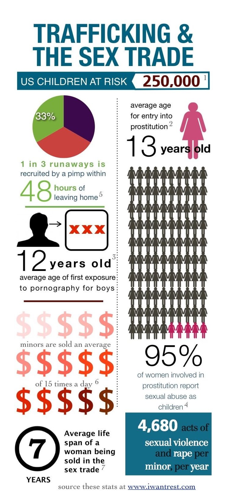
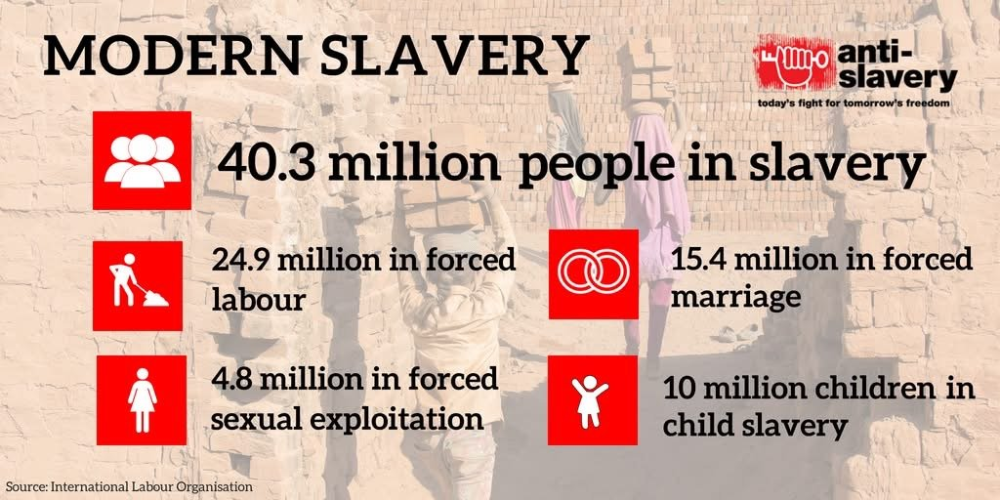
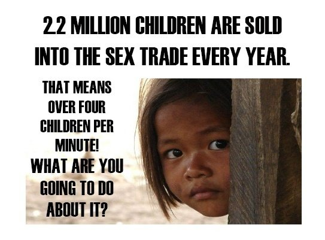
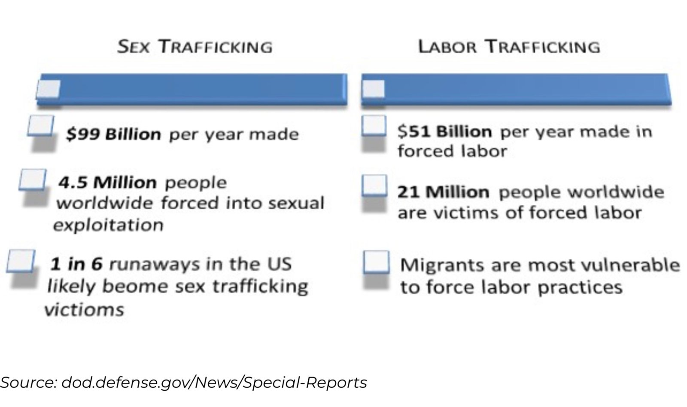
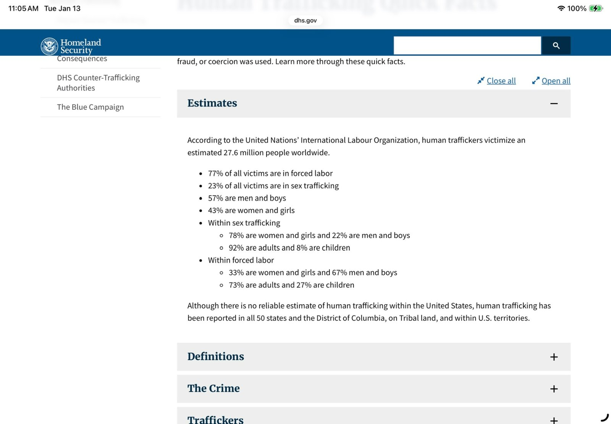
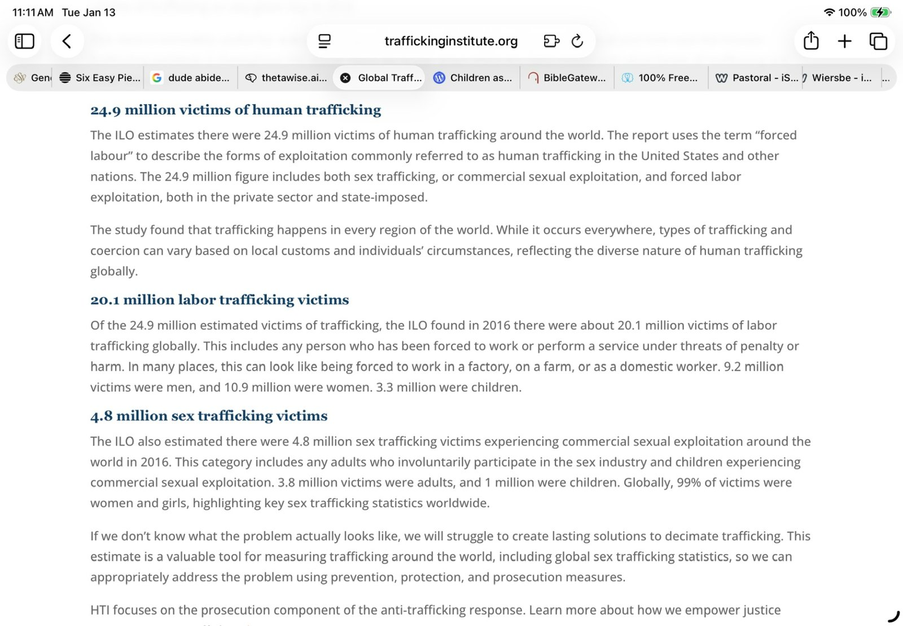
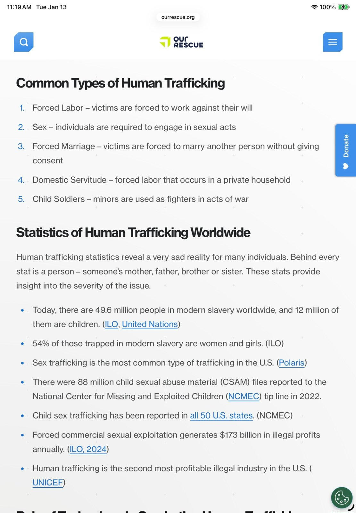

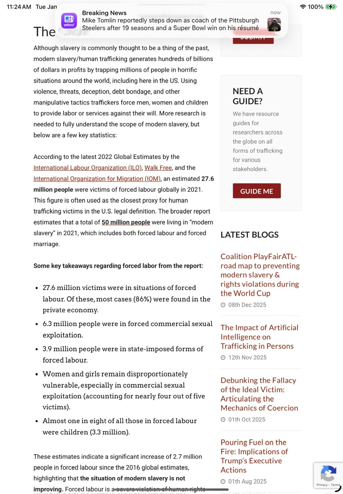
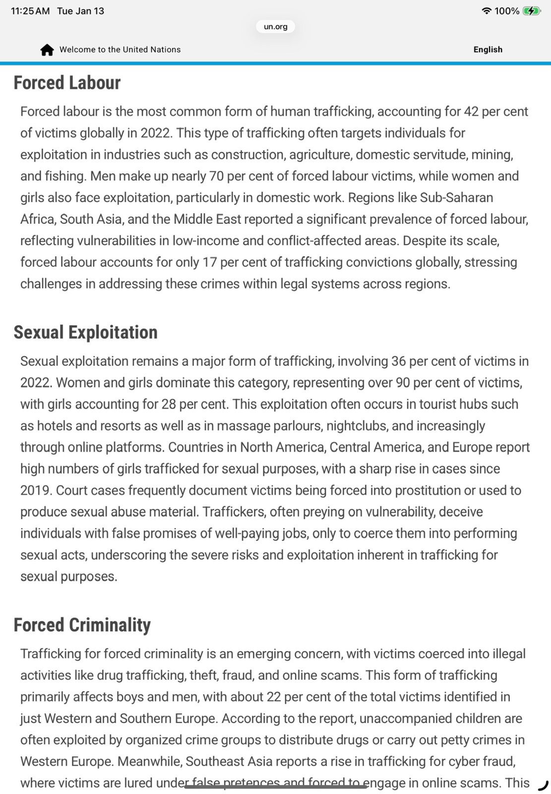
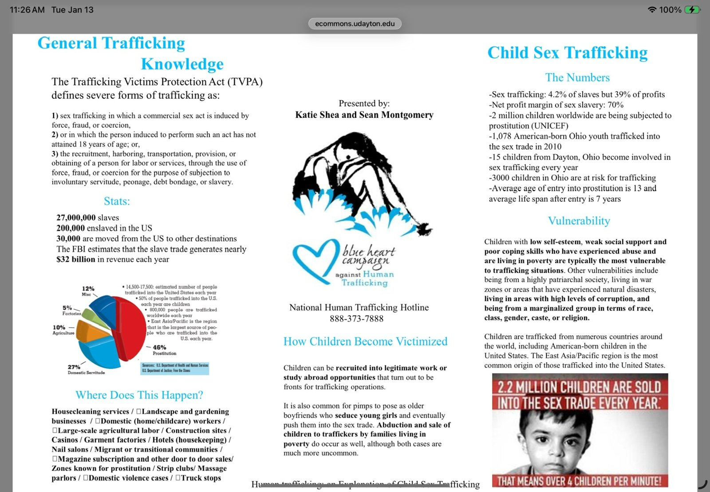
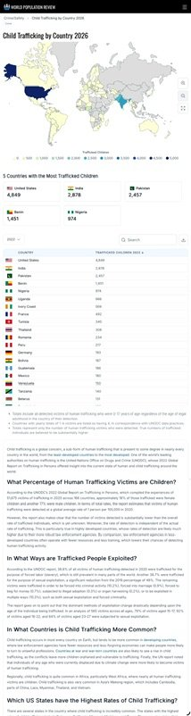
It's good, at a minimum, that I'm even thinking about trying again. The cause hasn't gotten any less worthy just because I have less to give it than I used to.
Comments